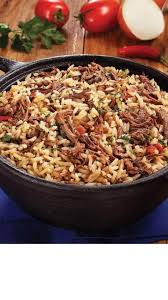

Arroz Carreteiro

O arroz carreteiro é um prato típico oriundo do Rio Grande do Sul (embora, atualmente, já esteja incorporado à cozinha brasileira, sendo comum saboreá-lo em todo o país).
É feito de arroz ao qual se adiciona carne bovina bem picada e refogada, carne-seca ou carne de sol desfiada ou picada, às vezes paio, bacon e linguiça em pedaços, refogados em bastante gordura, com alho, cebola, tomate e cheiro-verde, sempre com bastante tempero
Ingredientes
Modo de Preparo
cozinhe a carne seca em panela de pressão, retire, espera esfriar e desfie.
Retire a pele da calabresa e corte em cubos juntamente com o bacon.
Refogue o bacon e a calabresa até ficar bem dourada, acrescentando depois a cebola, tomate, pimenta calabresa e a carne desfiada.
Após acrescente o arroz, afogue bem, adicione a água corrigindo o sal se necessário e abaixe o fogo aguardando secar.